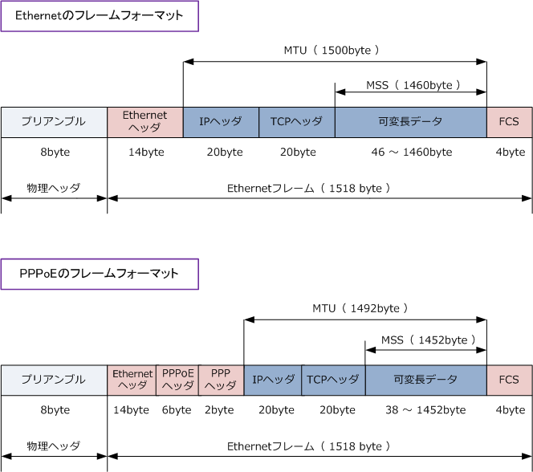
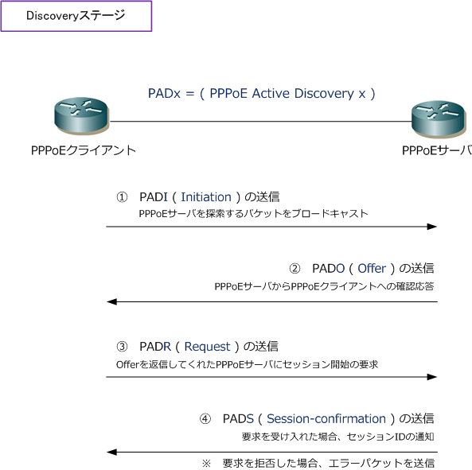
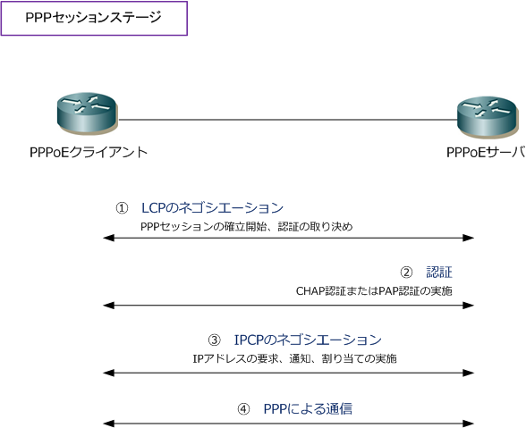
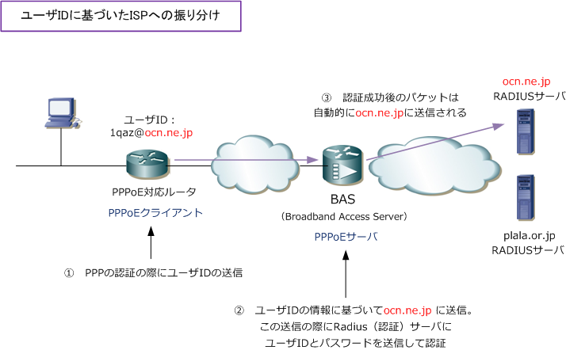

PPPoE
PPPoEとは
PPPoE（PPP over Ethernet）は、その名の通りPPPの機能をEthernet上で利用するためのプロトコル。 PPPはシリアルのWAN回線やISDN接続の際によく使用されるプロトコルですが、これをLANにおいても 利用できるようにしたのがPPPoEです。PPPoEはLAN上においてもユーザ認証が可能であり、IPアドレス の割当も可能なので、常時接続のADSLサービスやFTTHサービスで広く使用されているプロトコルです。
EthernetフレームとPPPoEフレームの違い

理論上のPPPoEフレームフォーマットを見ると PPPoEを採用しているFTTHサービスのBフレッツ でのインターネットではMTUを1492byteとして 設定MSSを1452byteと設定すべき、と思われる かもしれませんが、Bフレッツ接続では、MTUは 1454byte、MSS1414byteとする必要があります。
この値で設定しないと、Webサーバによって通信 できないケースもあるので必ず順守しましょう。 理由はフレッツ光のMTUサイズはなぜ1454byte ? を参照頂ければと思います。ちなみにキャリアに よりサイズが異なるので、事前に確認しましょう。
IP通信確立までの2つのステップ
PPPoE接続を行ってIP通信ができるようになるまでには、DiscoveryステージとPPPセッションステージの 2つのステップを踏む必要があります。最初にPPPoEセッションをはるまでをDiscoveryステージと言います。 その後のPPPによるやりとりをPPPセッションステージと言います。後に解説しますが、PPPoEクライアント は、加入者宅にあるPPPoEが有効な機器(ルータ、PC)、PPPoEサーバは一般的にキャリア側にある機器です。
PPPoE Step 1 ： Discoveryステージ
Discoveryステージでは、PPPoEセッションを確立するPPPoEクライアントとPPPoEサーバのMACアドレスを 特定し、PPPoEセッションIDの割り当てを行います。それではDiscoveryステージの詳細を見ていきましょう。

※ 例えばCiscoルータの場合、このDiscoveryステージの結果をshow pppoe session allコマンドで確認することができます。
PPPoE Step 2 ： PPPセッションステージ
Discoveryステージの④でPPPoEサーバがPPPoEクライアントにセッションIDを通知すると次のステージの PPPセッションステージに移行します。PPPセッションステージにより認証が成功して、PPPoEサーバから 適切なIPアドレスが割り当てられるとPPPoE接続は完了です。これにより、IP通信ができるようになります。

※ PPPoE接続が上手くいかない場合、一般的にはこのフェーズの問題であることが非常に多く、②の部分で失敗しています。 認証方式 (CHAP or PAP) のミス、ユーザIDやパスワード誤入力など。Ciscoルータならdebug ppp authenticationで確認します。
PPPoE - ISPの認証サーバへの振り分け
例えばBフレッツを契約すると、NTTからレンタルでONU (回線終端装置) が設置されることになります。 契約者がONUを変更することなくISPを乗り換えられるのは、以下の振り分けが実装されているからです。

とはいえ企業として実際に契約すれば分かると思いますが、例えばOCNの場合はONUのシールの記載に あるフレッツ契約IDとISP番号がリンクしているので、それぞれのONUに該当するISP情報で接続します。